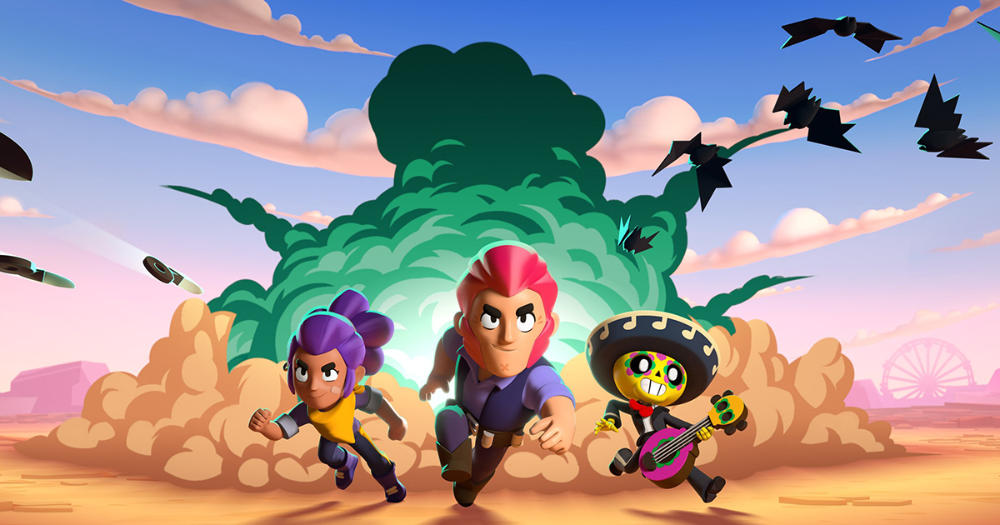

Цель игрока — продвигаться по игровой трофейной дороге, участвовать в боях с другими игроками, а также открывать и улучшать новых игровых персонажей с уникальными способностями и характеристиками. Геймплей игры сосредоточен на том, чтобы в одиночку, командой из двоих человек или в кооперативе из троих или пяти человек победить команду других игроков, или противника под руководством ИИ, в разнообразных игровых режимах. Игроки могут выбрать персонажей, каждый из которых имеет свои навыки и суперспособность. Персонажей можно получить во внутриигровом магазине за кредиты, а гаджеты, звёздные силы и снаряжение — купив за монеты.
В мае 2020 года в одном из обновлений игры была добавлена новая система наград под названием Brawl Pass. Когда игроки участвуют в сражениях, они зарабатывают жетоны, используемые для разблокировки уровней наград. Игроки могут получать кредиты, кристаллы, скины, значки (эмодзи, которые можно использовать во время баталий или в комнате командной игры), монеты, очки силы, спреи (специальные рисунки, которые можно оставлять на земле на поле боя) и бойцов. Существует три типа Brawl Pass: бесплатный и платный, а также Brawl Pass Plus, оба этих платных версий приобретаются за настоящие деньги.